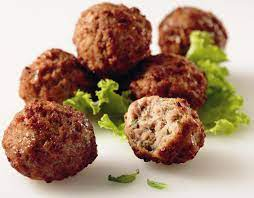

Keftadakia
Description
Keftedia is one of the staples of traditional greek cousine.
Ingredients
- Ground beef
- Flour for coating
- Onion
- Garlic
- Oregano
- Parsley
- Mint
Instructions
- Mix the ground beef, garlic, onion, oragano, parsley and mint.
- Mix them into ball sizes
- Fry or bake them into the oven